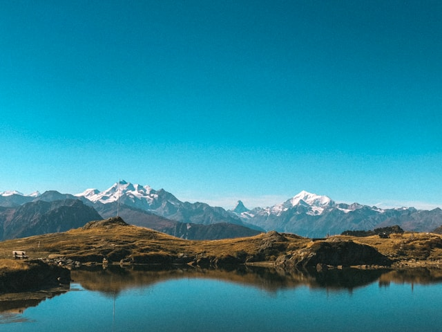

EXCURSIONS IN THE ALPS
CHOOSE YOU TRIP
We choose hotels which offer a great location, a high standard of comfort and quality, and a solid value to our guests. These inns offer a superbly satisfying mix of a welcoming atmosphere, traditional cuisine, and authentic charm. The are typically small, independently-owned properties which reflect the character and hospitally of the surrounding alpine community. We know the owners personally. have a longstanding relationship with them, and we find they bend over backwards to provide our guests width a exceptional experience.

2019 TOUR DATES
- Sept 19 - 29 - Deluxe Haute Route - Charmonix to Zermatt - Classic trek has a new standard SOLD OUT
- Sept 26 - Oct 5 - Scenic Alps By Roll - The Grand Train Tour of Switzerland SOLD OUT
- Sept 29 - Oct 5 - Discover Swiss Cuisine - Italian inspired- A culinary adventure in Lugano SOLD OUT
- Oct 9 - 18 - Scenic Alps by Roll - The Grand Train Tour of Switzerland ONLY 4 SPOT AVALAIBLE
- Dec 3 - 11 - Christmas in Switzerland - Enjoy authentic Switzerland at its holiday best AVALAIBLE
- Dec 5 - 13 - Christmas in Switzerland - Enjoy authentic Switzerland at its holiday best AVALAIBLE